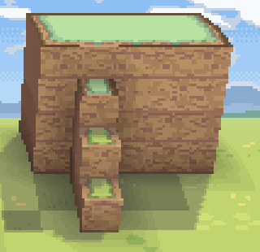

A level drawn 16 px high, as tall as a tile is wide; the cat at its own pixels (14 x 16), exactly one block tall. Same spot: a step 1 high west of you, a wall 2 high east, a tunnel 1 high into the hill (left), a stair up the hill (right), a house (top). A real render; land rules unchanged.
What still looks wrong: the house walls stay 12 px, lower than a 1-high step (and a roof would sit 3 levels = 48 px up: three of you); each stair step is now as tall as you, so the stair reads as stacked boxes; earth sides repeat a band every level (seams across the hill); the 1-high tunnel mouth is a slit you just fit in; a hill 4 high hides twice as much land behind it, and on the phone the sides of nearby hills fill the screen's edges.

Real renders from the game's own renderer (two constants and the body's size changed on a copy, nothing in your game). Same spot each time: you on the meadow, a wall 1 high west of you and 2 high east, a tunnel dug 2 high into a hill (left), a stair up a hill (right), a house (top). The cat is 14 x 16 art px. Each new player is a new character, so the fur colour changes: ignore it.
My honest view: B and C have the same proportions (you exactly 2 levels tall, a block about half your width); they differ only in how fine the land's pixels are. C is the cheap one: no server change, the agents see the same world. Its flaw: the cat's pixels are twice the land's (our pixel rule) until the cat is redrawn at 32 px, and built walls/houses must be redrawn 2 levels tall (look how low the house is in C). B has one pixel size everywhere but means new 8 px art for everything and a world with 4 cells per tile: every save, the server and the agents' map change. A does not do what you asked: a level stays a quarter of your height. I suggest C, then the cat redrawn at 32 px. Tell me a number.


Close up, real size (0, A, B, C)


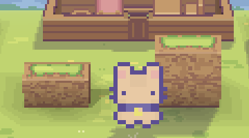
Your pocket under your stair, your stair halfway, and your bottom room. Each sheet, left to right: today | 1 well (wide lens looking down a hole) | 2 tilted from the south | 3 drawn cliffs | 4 side cut (a slice seen from the side).
My honest view: only the side cut (4) really shows height: in your pocket you see the ledge east of you is at your head and the stair is a diagonal above. But it fails in the bottom room (the cave runs north-south there). 1 looks more 3D but does not show height. 2 brings back fake stairs. 3 is weak. My suggestion: keep today's view and add the side cut as a small inset (or on a held key) when you are under ground. Tell me a number, or "inset".
Your pocket (scroll sideways)
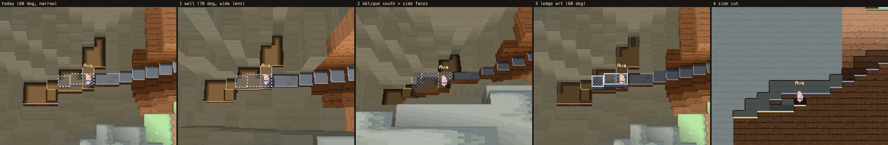
Halfway down your stair

Your bottom room

Each sheet: the old view on the left, HD-2D on the right, same objects. Not in your game yet. Fixed since: the bed stands straight, the rug shows, HD water is the clear see-through water, stairs have treads, items bob. Still weak: a north-south fence (posts overlap), roofs are stepped slabs, shadows are contact shadows only. Tell me any object that looks wrong to you.
Furniture

Built pieces

Blocks

Plants

Ground
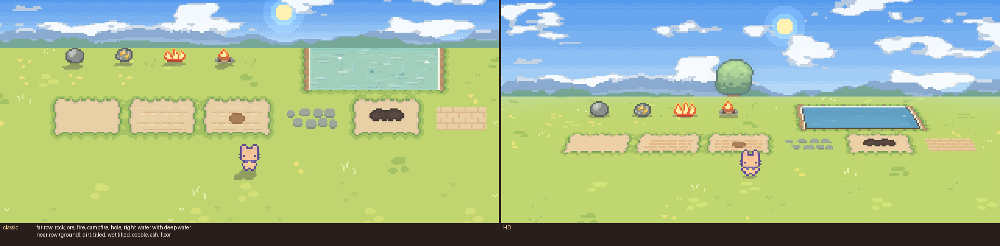
Creatures

Players

Items

Lights at night

A room deep under ground

A house, outside

A house, inside
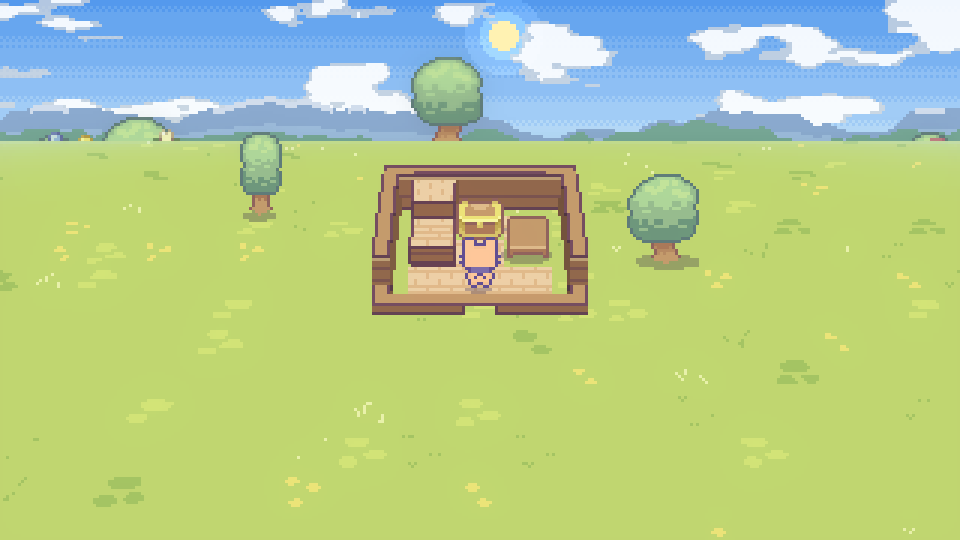
Left: the game today. Right: one tilted HD-2D camera, the game's own pixel art on every face, the sky and horizon, your cat at its real size. Going down there is no switch: the earth slice opens round you as the land closes over you.
My honest view: the surface is good: the meadow, terraces and canyon read and look like one world. Under ground is still not right: it turns into a small lit island in a dark plain, which feels like another game. Not shown yet because they are broken: the pond (your cat floats) and the mountain (the sea shows as empty sky). Fixing those next.
The meadow at your cave entrance

The canyon

Walking from the meadow down into your cave, 8 frames

Your own cave from your world (a copy of the save). Left: today. Right: the new look. The rock round your tunnel is a slice of solid stone, your stair is cut into it with a lit edge on every step, the room at the bottom has its own walls, a sign says how deep you are, and the way out has a light shaft.
Updated: the rock now reads as layers of earth and stone, not bricks; going down into the trench blends in over three steps instead of one; the small pocket above your bottom room shows as a black slot. Still weak: the stone layers are a flat grey-brown with even seams, and the first two steps into the trench look ghostly while the two looks blend.
Halfway down your stair

The bottom room

Top of the stair
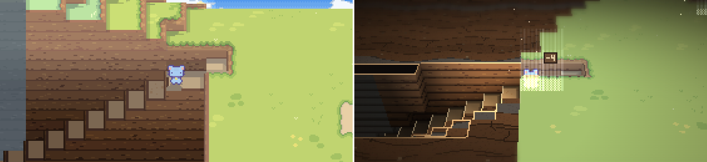
The deepest point
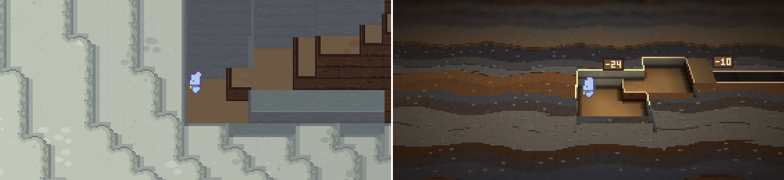
Looking back at the way out

Walking from the meadow to the bottom, 12 frames

You picked: the land's light (1 + 2 + 3), the side of a block (4), water you can see through (10). Below is what they look like, real pictures of the game. In the game means reload and you have it; coming means built, being checked.
Left: the game today. Right: built, being tested. Each level of stone has its own tone on top (darker low, as the pack paints it high), a band of shade at the foot of each step, a darker rim where a top drops. Walls are one even face at every hour: they take no cast shadow any more (four tries each drew wedges or squares on your canyon wall).

Left: the game today. Right: the same wall as it is in the game now. Morning, noon, evening, and noon with the Natural shader. One rock from rim to foot, no squares; the water is the one you picked.


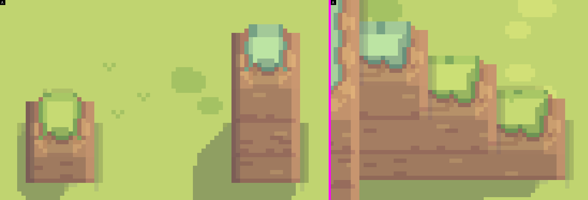


Look at the lake. 0 is the game today. In 7 the bed is real blocks under the water: sand steps down from the bank and the water gets deeper blue over it. 8 adds the bed shifting a pixel under the ripple, 9 light lines and the lily pad's shade on the bed, 10 is my pick of them (clear near you, less clear far away). 7 to 10 differ little in a still picture: the step that matters is 0 to 7.
It is stepped, as the land is: a pond goes down a level at a time from its bank. Not in the game.


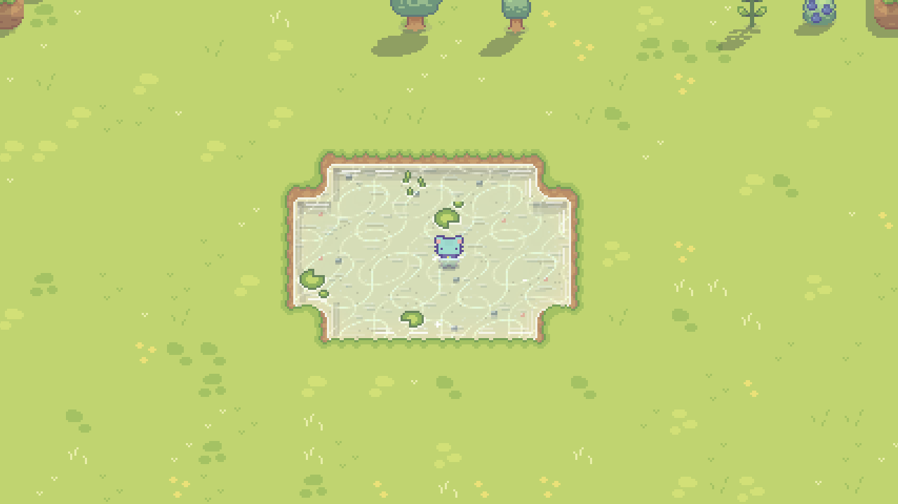
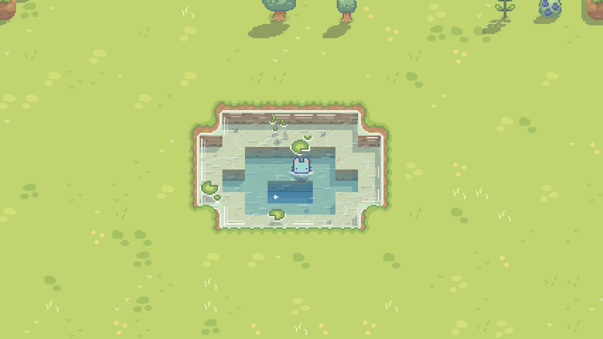
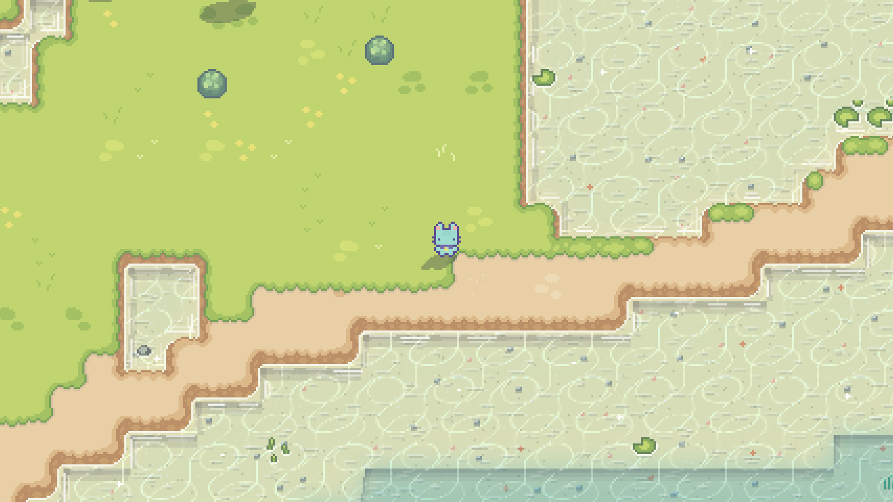
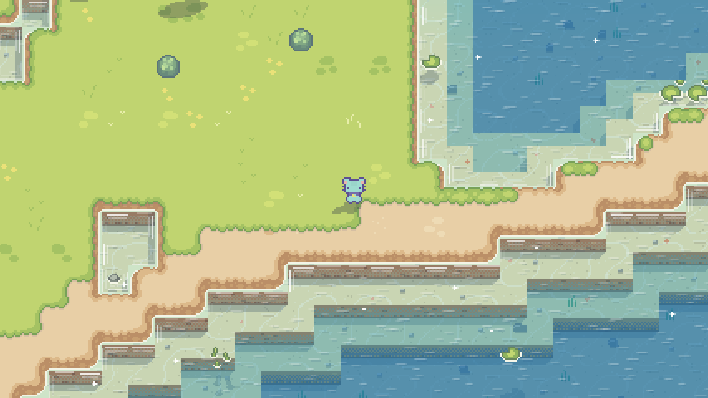


Picked already: the land's light (1 + 2 + 3, in the game), the side of a block (4, landing).